v0.51 動作與先前呈現記錄
落牌與接續節奏 v0.51
牌先落桌，再顯示吃碰提示，短暫停留後開放回應；摸牌與副露使用較輕的落牌聲。進入可玩牌桌
保留 v0.50 的 A 配色、第三組牌身與所有排列。這次調整飛行曲線、桌面影子、落牌音效觸發時機，以及吃碰槓的接續時間。
實際牌桌：已確認的配色與排列保持原樣正式渲染器的動作姿態取樣：起點與終點相同，途中曲線與影子不同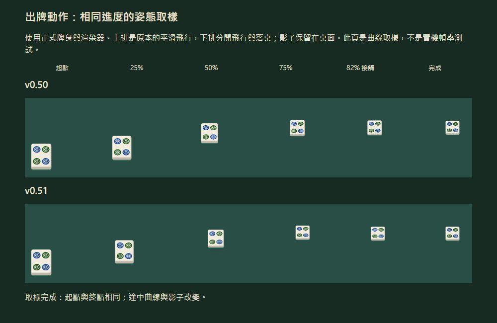
驗證包含 25 項測試，以及實際出牌、碰牌、槓後補牌、取消動作與關閉動畫。逐格檢查確認飛行期間不先顯示吃碰面板，接觸桌面後才顯示，辨識停留結束後才可操作。背景瀏覽器會節流，因此此處不宣稱實體手機幀率。
v0.50 配色與牌身對照
配色與牌身套用 v0.50
套用選定的 A 配色與第三組側家牌身：桌面與玉綠牌背分開，左右家暗手牌較矮、較寬，白色側面及頂面更清楚。返回可玩牌桌
自家手牌、對家手牌、吃碰槓、棄牌、花牌與牌牆的位置及方向維持前版。側家牌列預留下一張摸牌位置；密集牌況會限制加寬幅度，避免侵入其他牌組。
調整前後：相同牌況與畫面尺寸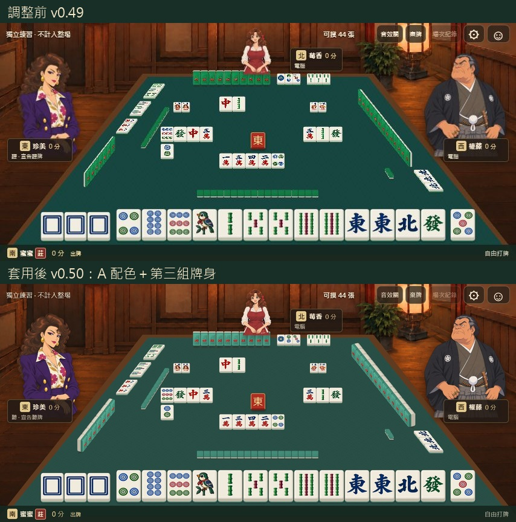
選定示意與正式套用：維持同樣牌身方向，補上實際摸牌空間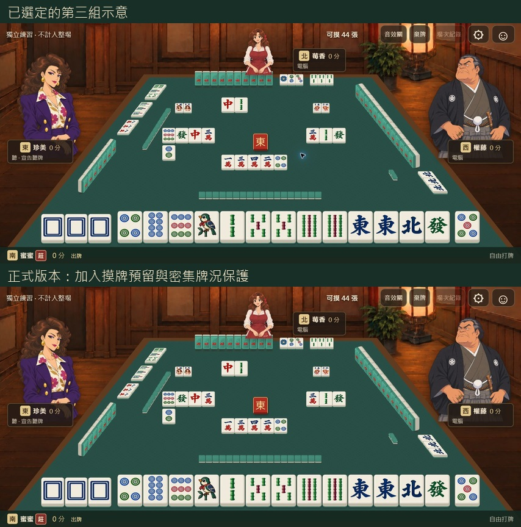
右家碰牌完成：牌身、手牌與副露接點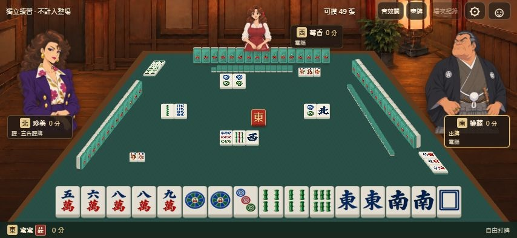
左家吃牌完成：共用排列方向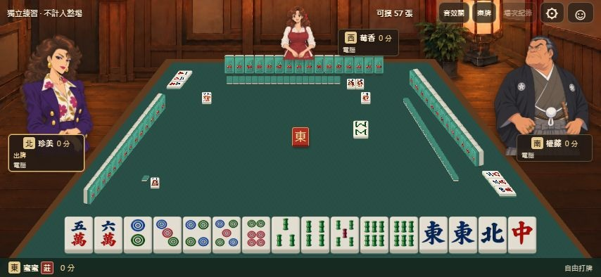
明槓與補牌完成：原有前景排列保持穩定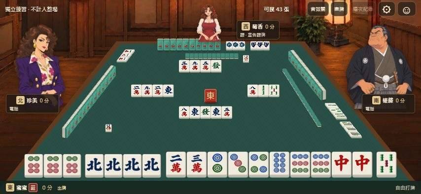
568 × 320：八花與多組槓牌的密集情境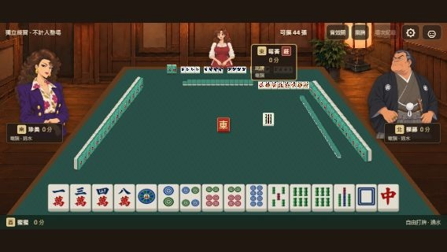
驗證：19 項回歸測試通過，28 組密集／標準牌況未發現碰撞或越界；四場完整模擬共 203 次狀態轉換。瀏覽器另操作右碰、左吃及明槓補牌。此頁是實際截圖，不代表實體手機幀率測試。
v0.49 呈現與操作記錄
呈現與操作對照 v0.49
改善吃碰回應、聽牌提示、成組移牌與結算排列。保留前版已校正的左右家共用排列基準、牌身比例及角色美術。返回可玩牌桌
以下為實際瀏覽器截圖。範例與新版牌局、角色及配色不同；完整畫面以相同尺寸比較空間分配。
完整牌桌與提供的範例影片：同為 854 × 394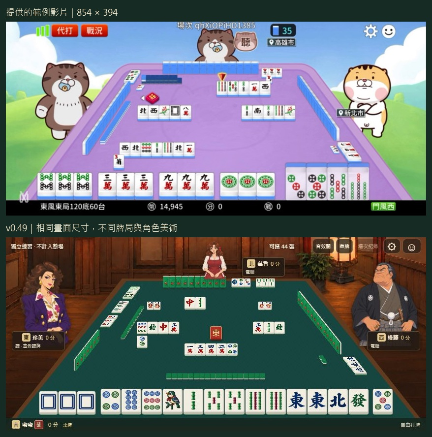
吃碰回應：出牌者、目標牌與可用手牌一起提示，手牌位置保持穩定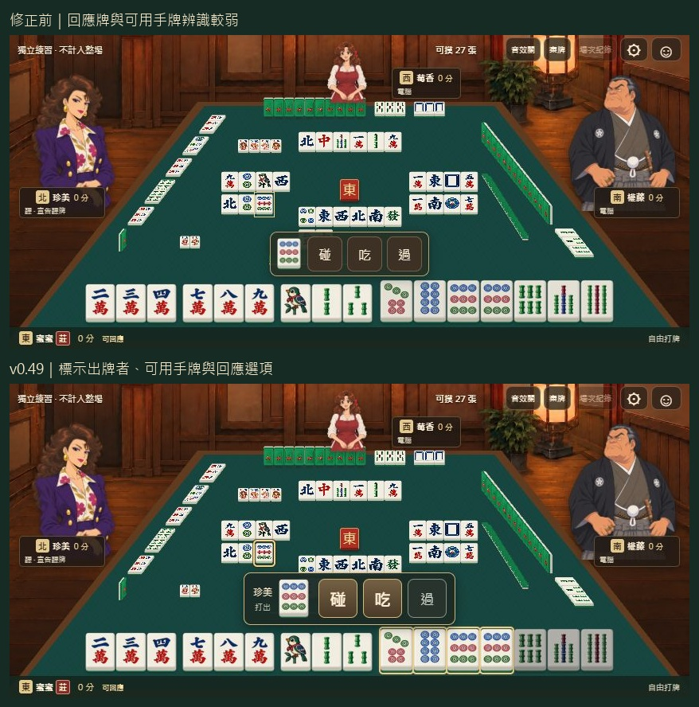
結算：各組沿同底線排列，標明吃碰槓，最後胡牌張單獨框出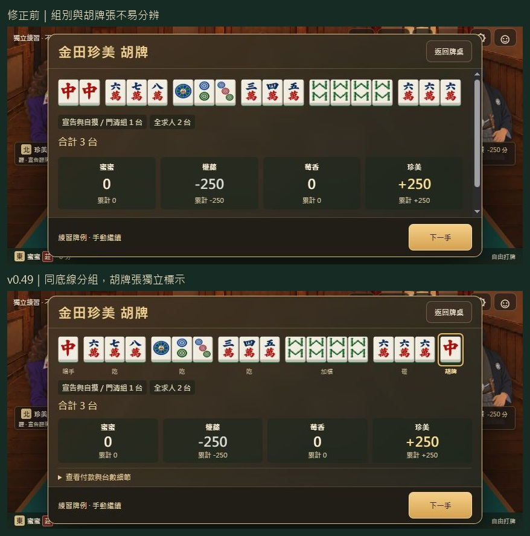
568 × 320 小螢幕回應畫面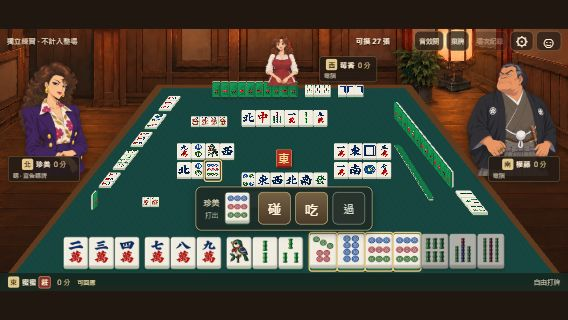
等待出牌時，聽牌提示放在右下空白區，不壓住對手牌列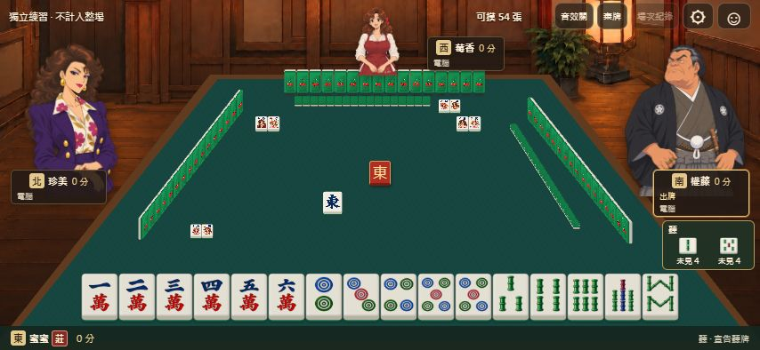
輪到自己摸打時，使用完整操作列，避免說明被擠成窄條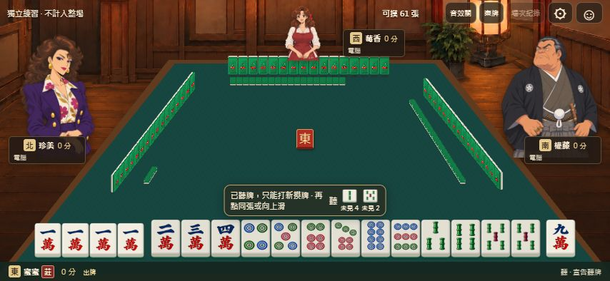
移牌過程與落點檢查
以下使用本機慢速檢查，確認牌分別從手牌位置移到副露，沒有重複顯示。正式版本維持正常速度；這些截圖不代表手機幀率測試。
右家碰牌途中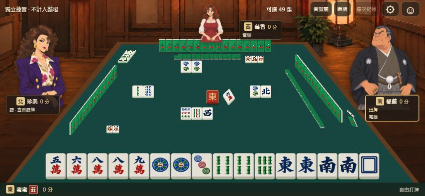
右家碰牌落定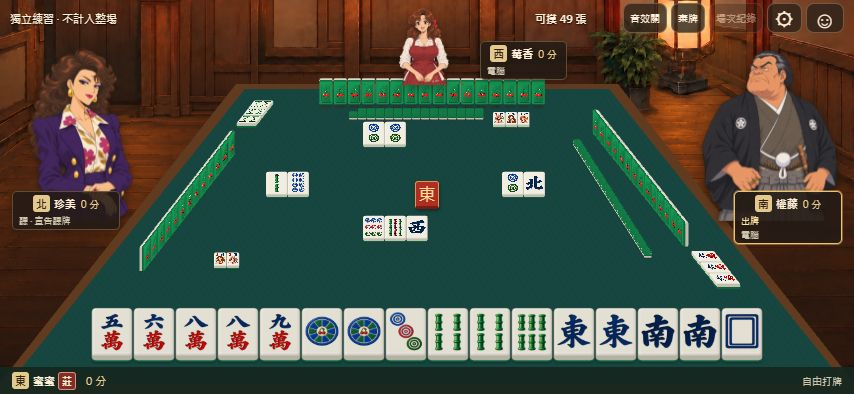
前版已修正的左右家排列
右家：範例、v0.47、v0.48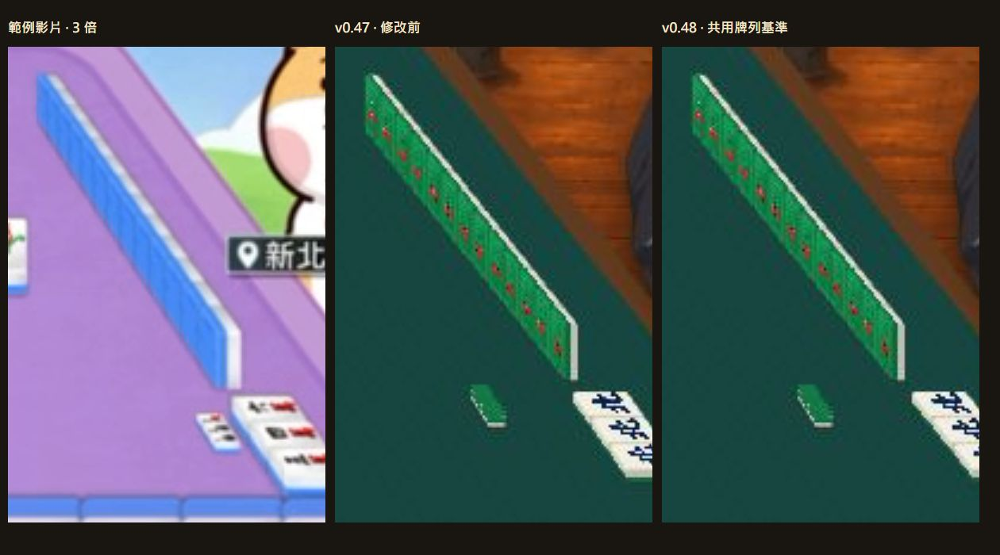
左家：範例、v0.47、v0.48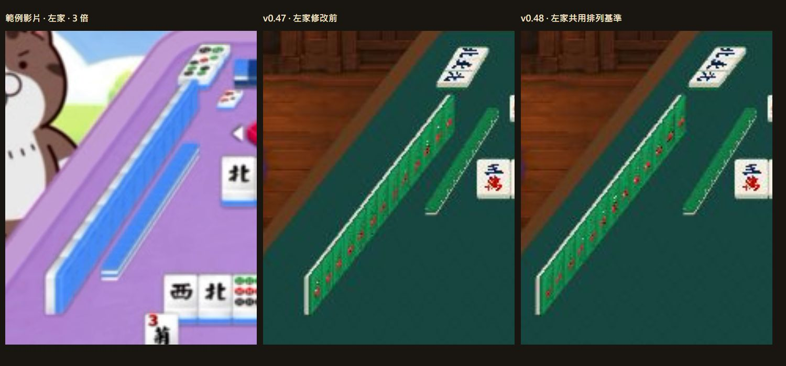